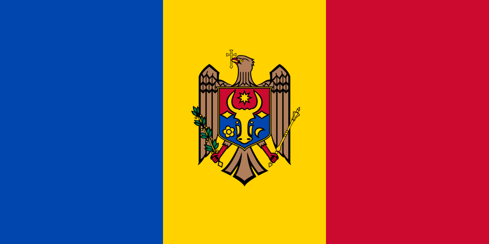
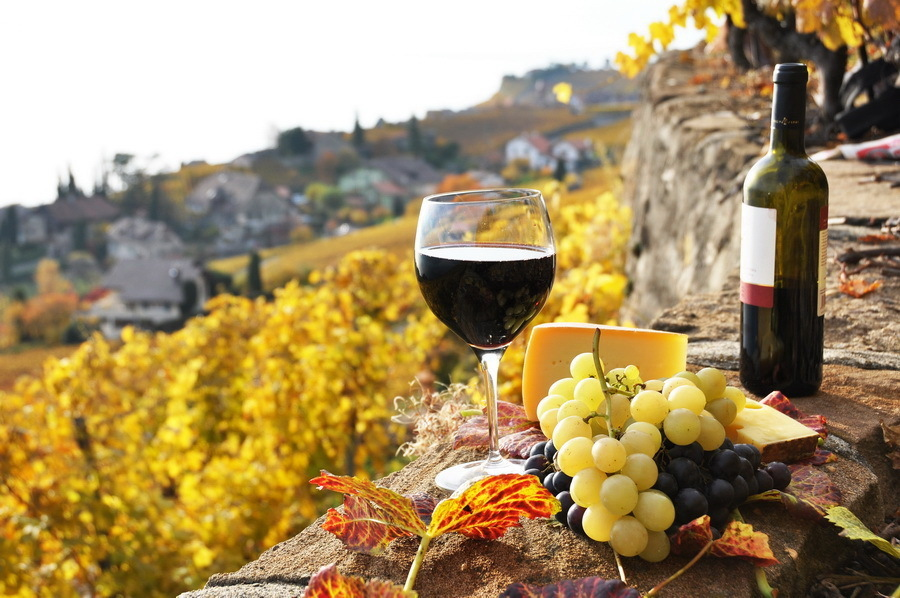
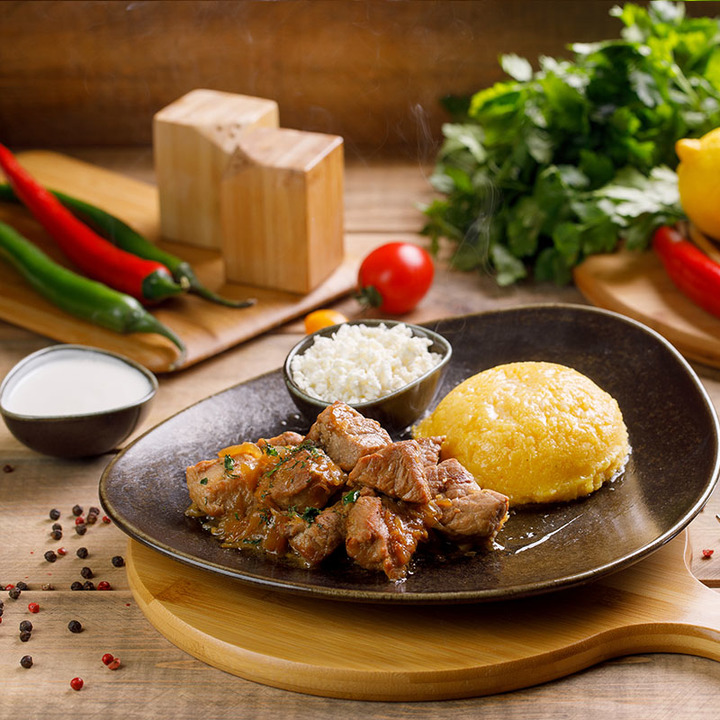

SIMBOLURILE
REPUBLICII MOLDOVA
Simbolurile Moldovei reflectă identitatea, tradițiile și sufletul poporului. De la stema cu bourul și portul popular, până la bucatele tradiționale – toate spun povestea unei țări bogate în cultură și spirit autentic.
Istorie

Acesta este steagul Republicii Moldova, reprezentând identitatea și valorile naționale si legătura istorică cu spațiul românesc, unitate și independență.

Moldova are unele dintre cele mai vechi tradiții viticole din lume .Simbolizează ospitalitate, tradiție și pământ roditor.

O mâncare tradițională moldovenească, cu friptură fragedă la cuptor, servită cu mămăligă caldă și brânză de oi sărată – simplă, dar plină de gust autentic.Simbolizează ospitalitate și identitate rurală.

Costumul tradițional moldovenesc este alcătuit din ii brodate manual, catrințe, brâuri și cămăși cu motive inspirate din natură. Este purtat la sărbători, festivaluri și evenimente culturale, reflectând frumusețea și tradiția poporului moldovean.